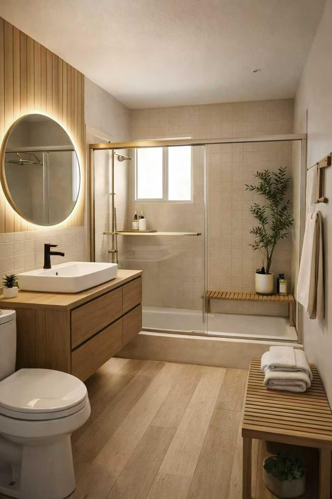
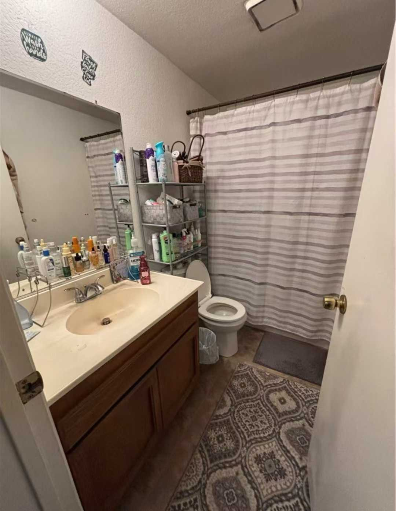
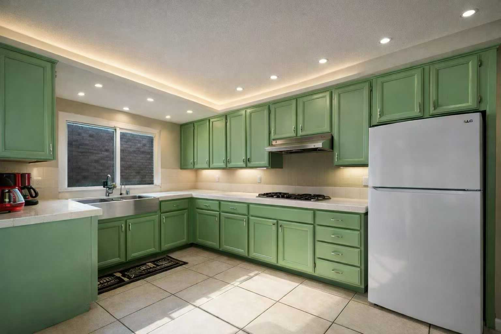
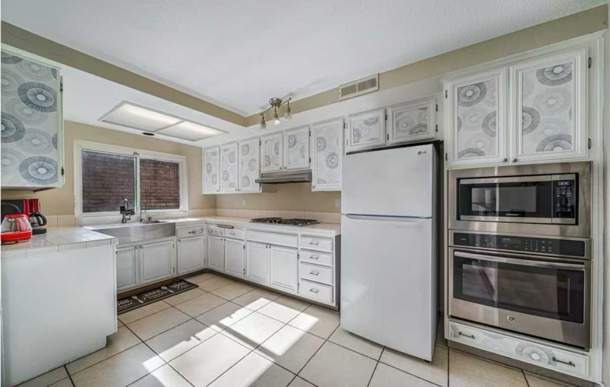
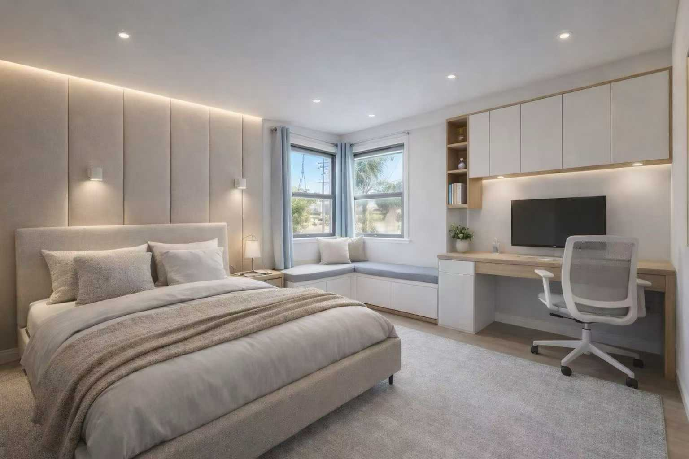
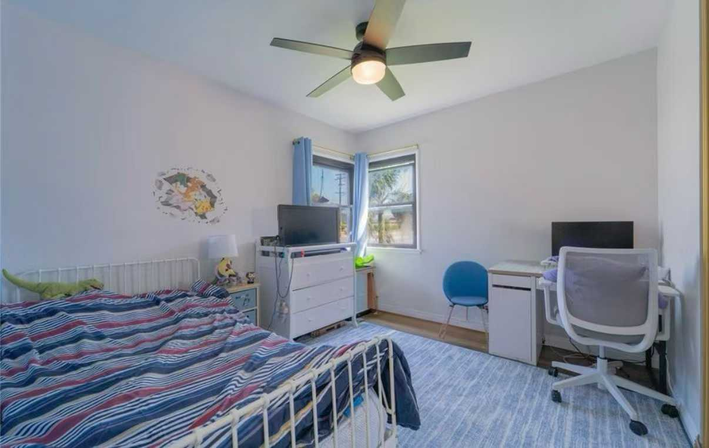
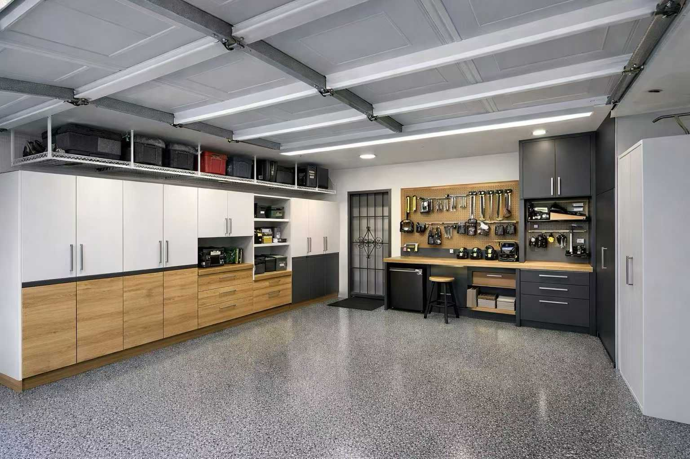
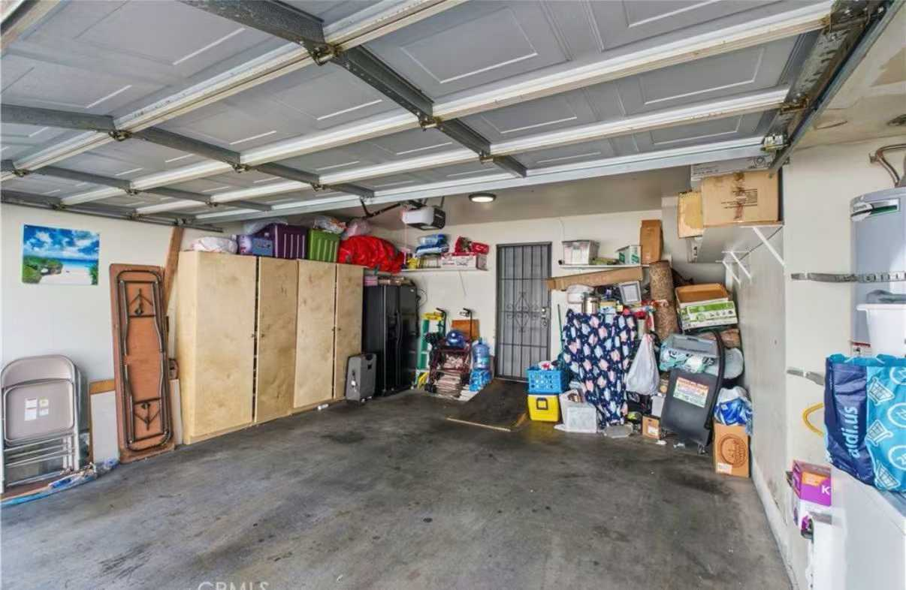

Use this for visual reference
It helps homeowners and agents show what a cleaner finish direction can look like when they are discussing whether a project feels worth exploring.
These visuals help customers picture finish level and improvement direction. They do not replace address screening, jurisdiction review, or project-specific feasibility. The point is to help a homeowner see the gap between current condition and a cleaner finished outcome before asking which path the property can really support.
It helps homeowners and agents show what a cleaner finish direction can look like when they are discussing whether a project feels worth exploring.
Older records, city path, legal status, and site conditions still decide whether a property should move toward garage conversion, detached ADU exploration, or a heavier existing-issue review.

Functional but dated, crowded, and visually noisy.

Cleaner palette, brighter enclosure, and a stronger finished-living feel.

Older cabinet treatment and a layout that reads more like inherited condition than intentional product.

Cleaner cabinetry, better lighting, and a more current finish package.

Usable room, but basic and visually under-finished.

Calmer built-ins, more deliberate work zone, and a stronger finished-space impression.

Typical storage-heavy garage condition with low clarity about the best next use.

Clean, organized, and intentional. For some homeowners this is the right endpoint; for others it clarifies whether a bigger path is worth screening.
A short on-site visual reference for real-world condition and finish context.
A second short clip that can be shared when a homeowner wants to see physical space instead of only still images.